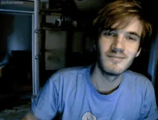

Felix Arvid Ulf Kjellberg(PewDiePie)
FIRST MAN TO REACH 100mil SUBS IN YOUTUBE(SOLO)
Felix Arvid Ulf Kjellberg, Swedish born 24 October 1989, better known as PewDiePie, is a Swedish YouTuber known for his comedic videos. Kjellberg's popularity on YouTube and extensive media coverage has made him one of the most noted online personalities and content creators. He has been portrayed in media as a figurehead for YouTube, especially in the genre of gaming.
Born and raised in Gothenburg, Kjellberg registered his YouTube channel "PewDiePie" in 2010, primarily posting Let's Play videos of horror and action video games. His channel gained a substantial following and was one of the fastest growing channels in 2012 and 2013, before becoming the most-subscribed on YouTube on 15 August 2013. From 29 December 2014 to 14 February 2017, Kjellberg's channel was also the most-viewed on the platform. During this period, his content shifted focus from Let's Plays and diversified to include vlogs, comedy shorts, formatted shows, and music videos.
Kjellberg's content was already noted for its polarizing reception among general audiences online, but in the late 2010s, it became more controversial and attracted increased media scrutiny. In 2019, following a public competition with Indian record label T-Series, Kjellberg was overtaken as the most-subscribed YouTube channel. Kjellberg also became more reserved online, uploading less consistently and taking frequent breaks from Internet use. He eventually semi-retired from YouTube, choosing to upload less frequently for his enjoyment rather than as a career. Meanwhile, in his personal life, he moved to Japan with his wife, Italian Internet personality Marzia.
With over 110 million subscribers and 29.4 billion views,his channel still ranks as one of the most-subscribed and viewed on YouTube. His popularity online has been noted to boost sales for the video games he plays, and has allowed him to stir support for charity fundraising drives. In 2016, Time magazine named him as one of the world's 100 most influential people.
INTERNET CAREER
- 2010–2012: early years
- Kjellberg originally registered a YouTube account under the name "Pewdie" in December 2006; he explained that "pew" represents the sound of lasers and "die" refers to dying.
- After initially forgetting the password to this account, he registered the "PewDiePie" YouTube channel on 29 April 2010.
- By December 2011, Kjellberg's channel had around 60,000 subscribers, before rapidly increasing in 2012. Around the time his channel earned 700,000 subscribers, Kjellberg spoke at Nonick Conference 2012.
- July 2012 saw his channel reaching 1 million subscribers, and it reached 2 million subscribers in September. In October, OpenSlate ranked Kjellberg's channel as the No. 1 YouTube channel.
- 2013–2014: becoming the most-subscribed user and continued growth
- On 18 February 2013, Kjellberg's channel reached 5 million subscribers.
- In May 2013, at the inaugural Starcount Social Stars Awards in Singapore, Kjellberg won the award for "Swedish Social Star".
- In July 2013, he overtook Jenna Marbles to become the second most-subscribed YouTube user,and reached 10 million subscribers on 9 July 2013.
- In 2014, Kjellberg's commentaries, originally best known for featuring horror video games, began to feature games that interested him regardless of genre. Kotaku wrote: "Instead of limiting himself to horror games, Pewdiepie is now actively playing more things that interest him.
- In 2014 alone, Kjellberg's account amassed nearly 14 million new subscribers, and over 4.1 billion total views. Both figures were higher than any other user. According to Social Blade, Kjellberg's channel became the most-viewed channel on the website on 29 December 2014, having amassed over 7 billion views by that date
- 2015–2017: YouTube Red, Revelmode, and style change
- On 6 September 2015, his YouTube account became the first to surpass 10 billion video views.
- In January 2016, Kjellberg announced a partnership with Maker Studios to produce Revelmode, a sub-network of Maker, that would showcase Kjellberg and his friends on YouTube in original series.
- Throughout 2016, Kjellberg's video style change became more apparent. While producing fewer Let's Play videos about horror games, his style of humour changed; he commented that he had shifted to drier humour, which was often not understood by younger viewers.
- On 2 December 2016, he uploaded a video discussing his frustration with the issue of YouTube accounts experiencing an unexplained loss of subscribers and views.
- Kjellberg's video was uploaded as his channel approached 50 million subscribers, and he stated he would delete his channel once it reached the milestone.On 8 December, his channel reached 50 million subscribers, becoming the first YouTube channel to do so.He shortly thereafter received a custom Play Button from YouTube as a reward for reaching this milestone. Ultimately, Kjellberg did not delete his PewDiePie channel, and instead deleted a smaller second channel he had then-recently created.[79] His threat to quit was also reported to be "in fact, a promotional stunt" for Scare PewDiePie.
- During this late 2016 and early 2017 period Kjellberg uploaded a string of videos addressing what Kjellberg saw as negative effects to content creator viewership caused by the new algorithm.
- 2017–2018: media controversies, streaming, and formatted shows
- In a video posted in January 2017, Kjellberg featured two paid individuals on Fiverr, asked to hold a sign that read "Death to all Jews". He alleged his intent was not against Jews, but to showcase how "crazy" the modern world and website were.
- In 2018, Paul MacInnes of The Guardian wrote about Kjellberg's YouTube content; he noted that each week Kjellberg posted videos featuring one of three series formats, comparing this uploading pattern to television programming.
- The three series listed were You Laugh You Lose, which features Kjellberg watching humorous video clips while trying to not laugh; Last Week I Asked You (LWIAY), having begun as a parody and homage to Jack Douglass' Yesterday I Asked You (YIAY), where he challenges his audience to create content and reviews the output; and Meme Review, in which he reviews popular Internet memes.
- On 27 December 2018, Kjellberg uploaded "YouTube Rewind 2018 but it's actually good", in response to the generally negatively-received YouTube Rewind 2018: Everyone Controls Rewind, which was originally uploaded by YouTube's Spotlight channel.

-
2018–2019: subscriber competition with T-Series
- In September 2018, Kjellberg uploaded a LWIAY video discussing Indian record label T-Series' YouTube channel being projected to surpass his in subscribers.On 5 October, Kjellberg uploaded a diss track against the label titled "Tseries Diss Track", stylized in all caps and later renamed "Bitch Lasagna" in response to their YouTube channel being projected to surpass his in subscribers.The video went on to replace "A Funny Montage" as Kjellberg's most-viewed video.
- On 12 March, Kjellberg uploaded an episode of his show Pew News in which he mentioned the 2019 Pulwama terrorist attack, where 40 Indian paramilitary troops were killed by a member of a Pakistan-based jihadist group. Following the attack, T-Series removed several songs by Pakistani artists on its YouTube channel after being pressurised by political party MNS to isolate Pakistani artists, a course of action that Kjellberg disagreed with.
- The outlet Zee News reported that Kjellberg "faced strong criticism for his comments on the heightened tension between Pakistan and India in [the] March 12 issue of Pew News".Kjellberg issued a clarification on Twitter, expressing that he was not attempting to speak on the broader India–Pakistan relations, but rather on the more specific context of T-Series removing artists' songs from its YouTube channel.
- After briefly gaining the title several times in early 2019, on 27 March, T-Series surpassed Kjellberg in subscribers to become the most-subscribed channel on YouTube.On 31 March, Kjellberg posted another diss track music video, titled "Congratulations", sarcastically congratulating T-Series for obtaining the title.In the music video, Kjellberg mocked T-Series and its actions, alleging T-Series was founded to sell pirated songs and mocking them for sending him a cease and desist letter after "Bitch Lasagna".Following the video's release, Kjellberg temporarily regained the most-subscribed position over T-Series.
- On 28 April, Kjellberg uploaded a video entitled "Ending the Subscribe to Pewdiepie Meme" in which he asked his followers to refrain from using the phrase "Subscribe to PewDiePie", due to incidents such as the phrase being graffitied on a war memorial, and its mention by the Christchurch mosque shooter.
-
2019–2020: Minecraft series, milestones, bans, and streaming
- On 25 August, Kjellberg became the first individual YouTuber to surpass 100 million subscribers. His channel was the second overall to reach the milestone, after T-Series, who passed the mark earlier in the year.YouTube tweeted a congratulatory post to note the occurrence,and awarded him a Red Diamond Play Button.
- Toward the end of the year, shortly after being acknowledged as the most-viewed creator of the year with more than 4 billion views in 2019,Kjellberg announced that he would take a break from YouTube the following year and deleted his Twitter account because of his dissatisfaction with the site.
- In October, Kjellberg's fans began to suspect his channel was shadowbanned, after noticing it and his recent uploads failed to appear in YouTube's search results.YouTube responded to the shadowban allegations on Twitter, claiming that the reason for the problems was due to search results being influenced by YouTube's system somehow flagging his recent uploads, and that due to the effects of the COVID-19 pandemic, YouTube was taking longer to review videos, including Kjellberg's.YouTube apologized for the situation and stated they were "working on fixing the issue."
- 2020–present: soft retirement and move to Japan
- In November 2020, Kjellberg uploaded a Q&A video, reflecting on his YouTube career. During the video, he expressed that he views himself as "retired" from YouTube, having felt so internally since earlier in the year.
- In January 2021, Kjellberg signed a distribution deal with Jellysmack, a content creation company.[163] The deal entails Jellysmack optimizing and then distributing Kjellberg's content for a Facebook Watch audience.Although now having his content released onto the Facebook platform, Kjellberg continued to debut his content on YouTube.
- On 14 February, Kjellberg uploaded a diss track titled "Coco" about Cocomelon, a kids-oriented channel which had been rising in subscribers for several years, and was growing by nearly two million subscribers per month.Kjellberg clarified that the children appearing in the music video were provided with a clean version of the lyrics to mime to while they were being filmed, and that their parents allowed them to participate in the video.
- In May 2022, Kjellberg and his wife Marzia moved from England to Japan. Much of his content following the move consisted of "vlogs about daily life around Tokyo.
- On 14 November 2022, MrBeast surpassed Kjellberg as the most-subscribed individual creator on YouTube. The two have been noted as contemporaries and friends, with MrBeast having previously supported the 'Subscribe to PewDiePie' campaign during Kjellberg's competition with T-Series.
- In May 2024, Kjellberg expressed discontent with what he described as an "infestation" of YouTubers visiting Japan to create "obnoxious" content for attention and "hate clicks".